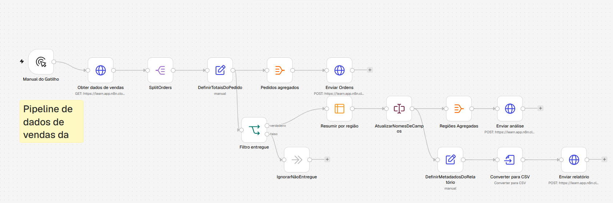
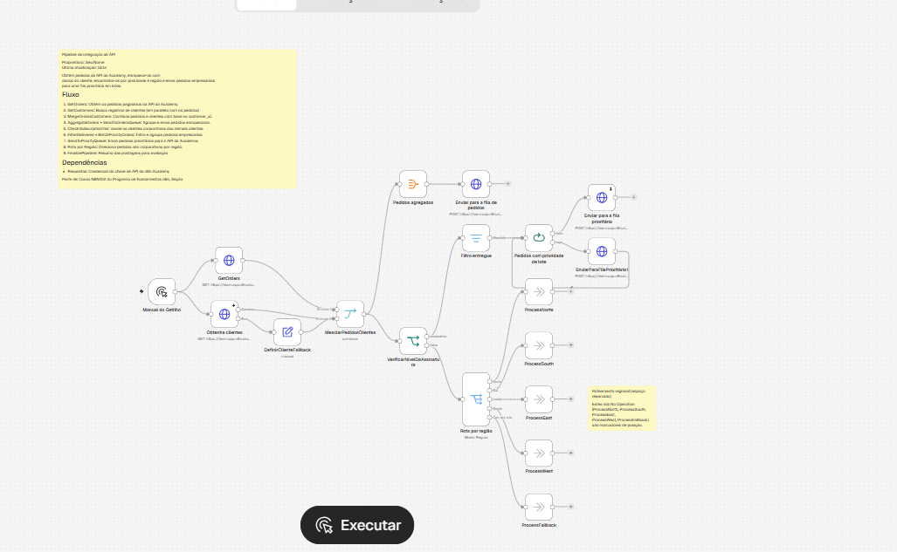

Exercícios dos cursos de n8n · 2026
Três workflows que resolvem problemas reais de empresas: responder a clientes com IA, juntar dados de várias APIs e produzir relatórios sem trabalho manual.

Workflow 1
Os clientes perguntam muitas vezes "onde está a minha encomenda?". Responder a cada um à mão leva muito tempo.
ObterDadosDoPedido) para ir buscar os dados reais da encomenda.Workflow 2
Os pedidos e os clientes estão em sistemas diferentes. A empresa quer tratar primeiro os clientes empresariais e encaminhar cada pedido para a sua região.

Workflow 3
Todas as semanas, alguém tinha de copiar as vendas, calcular os totais, separar por região e enviar um relatório. Era um trabalho repetitivo e com risco de erros.